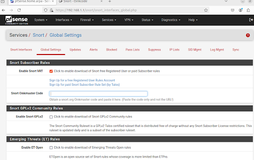

Comprehensive Documentation: Setting up pfSense with Snort for IDS/IPS in VirtualBox
Table of Contents
- 1. Introduction
- 2. Prerequisites
- I. VirtualBox Setup: Network Configuration and Boot Order for VMs
- II. pfSense Initial Configuration (Console & Web Interface)
- III. Installing and Configuring Snort on pfSense
- IV. Creating and Testing a Custom Snort Rule (Port Scan)
- V. Expanding and Refining Your Snort Setup
- Conclusion
1. Introduction
This guide will walk you through building a functional, isolated network security lab within Oracle VirtualBox. You will deploy pfSense as a central firewall, integrate Snort to detect and prevent network intrusions, and use Ubuntu as a typical internal client machine while Kali Linux serves as an attacker platform for testing.
2. Prerequisites
- Host Machine: A computer with enough RAM (8GB+ recommended), CPU cores, and disk space (100GB+ recommended) to run multiple virtual machines concurrently.
- Oracle VirtualBox: Download and install the latest version from virtualbox.org.
- pfSense ISO: Download the CE (Community Edition) AMD64 installer from pfsense.org.
- Ubuntu Desktop ISO: Download the latest LTS (Long Term Support) version from ubuntu.com.
- Kali Linux VM Image or ISO: Download the VirtualBox pre-built image or an installer ISO from kali.org/get-kali/. Using the pre-built VM image is generally faster for Kali.
- Internet Access: Required on the host machine for downloading software and for pfSense to update rules.
- Basic Networking Knowledge: Familiarity with concepts like IP addresses, subnets, and firewalls is helpful.
- Snort.org Account: A free registered user account is required to obtain an Oinkcode for official Snort rules. Register at www.snort.org.
I. VirtualBox Setup: Network Configuration and Boot Order for VMs
Proper VirtualBox network configuration is paramount for pfSense to act as a central firewall and for VMs to communicate correctly. Ensure all VMs are powered off before changing their settings.
A. pfSense VM Configuration
Network Adapters (Crucial):
Select your pfSense VM (must be powered off) and go to Settings > Network. Configure two adapters:
- Adapter 1 (WAN): Attached to NAT, Promiscuous Mode: Allow All.
- Adapter 2 (LAN): Attached to Internal Network (e.g.,
intnet), Promiscuous Mode: Allow All.
After configuring the network adapters, start the VM and follow the on-screen prompts to install pfSense.
Remove Installation Media & Adjust Boot Order (After Installation):
After the installation completes, power off the VM. Go to Settings > Storage and remove the pfSense ISO from the virtual optical drive. Then, go to Settings > System and ensure 'Hard Disk' is at the top of the boot order.
B. Ubuntu VM Configuration
Network Adapter:
For the Ubuntu VM, go to Settings > Network. Set Adapter 1 to be attached to the same Internal Network (intnet) as the pfSense LAN. Set Promiscuous Mode to 'Allow All'.
C. Kali Linux VM Configuration
Network Adapter:
For the Kali Linux VM, also go to Settings > Network. Set Adapter 1 to be attached to the same Internal Network (intnet). Promiscuous Mode must be 'Allow All'.
II. pfSense Initial Configuration (Console & Web Interface)
A. Console Interface Assignment
Start your pfSense VM. It will boot to a text-based console. Follow the prompts to assign your network interfaces (e.g., vtnet0 for WAN, vtnet1 for LAN).
After assignment, the console will display the WAN and LAN IP addresses. The default LAN IP is 192.168.1.1.

B. Web Interface Setup Wizard
Start your Ubuntu VM. Open a web browser and navigate to https://192.168.1.1. Accept the security warning and log in with the default credentials (admin/pfsense).
Follow the setup wizard to configure basic settings like hostname, domain, time server, and most importantly, to set a new admin password.
III. Installing and Configuring Snort on pfSense
A. Install Snort Package
In the pfSense web GUI, go to System > Package Manager > Available Packages. Search for "snort" and click Install.
B. Configure Snort Global Settings
Navigate to Services > Snort > Global Settings. Enter your Snort Oinkcode and enable the desired rule sets (Snort VRT, Emerging Threats, etc.). Set an automatic update interval.
C. Update Snort Rules
Go to the Updates tab and click the "Update Rules" button to download the latest rule sets.
D. Add and Configure Snort Interface (LAN)
Go to the Snort Interfaces tab and click "+ Add". Select the LAN interface, give it a description, and for initial testing, LEAVE "Block offenders" UNCHECKED. This runs Snort in IDS (detection) mode.
E. Configure Preprocessors and Rule Categories for LAN Interface
Edit the LAN interface in Snort. On the Preprocessors tab, uncheck all general preprocessors for initial custom rule testing to avoid interference. On the Categories tab, ensure "User Defined Rules" is checked.
IV. Creating and Testing a Custom Snort Rule (Port Scan)
A. Understanding Snort Rule Syntax
A basic Snort rule looks like this:
action protocol source_ip source_port -> destination_ip destination_port (options)Key options include msg, sid, rev, and flags.
B. Creating the Custom Rule
We will create rules to detect ICMP pings and inbound SYN scans.
alert icmp any any -> any any (msg:"ICMP Ping Test"; sid:1000001; rev:1;)
alert tcp any any -> $HOME_NET any (msg:"Inbound SYN Scan"; flags:S; threshold:type threshold, track by_src, count 10, seconds 60; sid:1000003; rev:1;)C. How to Add the Custom Rule in pfSense
Go to Services > Snort > Snort Interfaces, edit your LAN interface, and click the Rules tab. Paste the custom rule into the "Custom Rules" text area and click Save.
D. Testing Your Custom Rule from Kali
First, start the Snort service on the LAN interface from the Snort Interfaces tab. The status icon should be a green checkmark.
On your Kali VM, open a terminal and run an Nmap SYN scan against your Ubuntu VM's IP address.
sudo nmap -sS -p 1-100 192.168.1.100Check for alerts in pfSense under Services > Snort > Alerts. You should see your custom message.
E. Troubleshooting (Common Issues & Diagnostics)
If you don't see alerts, check the Snort interface status, review system logs for Snort errors, and use the Packet Capture tool in pfSense (Diagnostics > Packet Capture) to verify that the traffic is actually reaching the LAN interface.
V. Expanding and Refining Your Snort Setup
A. Re-enable Preprocessors (Gradually)
Once basic testing works, go back to the Preprocessors tab for your LAN interface and start enabling relevant items like Stream5, HTTP Inspect, and DNS for deeper inspection.
B. Tune Your Custom Rule Threshold
To make the port scan rule less noisy, add a threshold. This rule alerts only if it sees 10 SYN packets from the same source within 5 seconds.
alert tcp $EXTERNAL_NET any -> $HOME_NET any (msg:"SYN Port Scan Detected (Custom Rule)"; flags:S; flow:stateless; threshold:type limit, track by_src, count 10, seconds 5; sid:1000001; rev:3;)C. Enable Blocking (IPS Mode)
When you are confident with the alerts, edit the Snort LAN interface and check the Block offenders box. This enables IPS (prevention) mode.
D. Explore Other Snort Rules
Go to the Categories tab for your LAN interface and enable more rule sets (e.g., malware, exploit, policy) to broaden your detection capabilities.
E. View Blocked Hosts
Go to Services > Snort > Blocked tab to see a list of IP addresses that Snort has blocked.
Conclusion
You have now successfully set up a powerful virtual network security lab with pfSense and Snort. This environment provides an excellent platform for learning about network firewalling, intrusion detection and prevention, and practicing penetration testing techniques in a safe, isolated space. Remember to keep your Snort rules updated and to continually refine your configurations as you learn more.